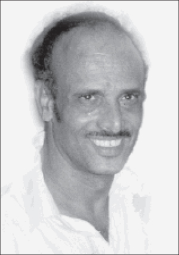

16 More Years!
There was an uplifted atmosphere in the dining room used by the students on K’vutza at 1414, the second night of Pesach. The bachurim sat together to farbreng and between niggunim some of them told miracle stories which they witnessed or which they experienced.

The story I will tell you now, happened around Purim time in 5748. My father, who was a strong, healthy man, began suffering from headaches along with other bothersome symptoms. After going to the neighborhood clinic, he was referred to Belinson hospital where after undergoing a series of X-rays and tests, the doctors told him he had stomach cancer.
Words cannot describe the broken heartedness of the family, especially my father. My father was released with instructions to return the following week for prolonged, intensive chemotherapy which had only a minimal chance of vanquishing the disease.
My parents did not sit around waiting for the treatment to begin. They visited rabbanim, Admurim, and kabbalists. They visited nearly every famous rav or mekubal, but they all had the same answer, “We will pray for you.” Other than that, nobody was willing to make any promises. Some recommended going to organizations that are experts in this field for their suggestions about better medication or better doctors.
My father, who was worried beforehand about his condition, was in total despair after visiting the rabbis. “If they can’t promise me anything, there is no chance I’ll make it,” he said.
At that time, we lived in Shikun Hei in B’nei Brak. My mother attended some shiurim in Chassidus and upon getting to know some of the active women, she began moving toward Chabad and the Rebbe. Her state of mind was no better than my father’s. One night, she wrote a long letter about what was going on and sent the letter to the Rebbe. She wrote that she wanted to go to Crown Heights to meet the Rebbe and receive his bracha.
In the Rebbe’s answer, he blessed my father and it was understood that he agreed that my parents should go to 770.
My father had started chemotherapy at Hadassah Ein Kerem in Yerushalayim. It was very hard to convince him to fly to the Rebbe after the many visits he had made to rabbanim. “It’s just a waste of time,” he repeatedly said.
After several months of medical treatment, there was a two week break in which he was supposed to rest. Somehow, my mother convinced him that there was nothing to lose and they packed up and traveled to New York.
My father was in a very low emotional state. His condition deteriorated from day to day and it was hard for him to eat and sleep. He was very depressed.
They went to 770 around Shavuos time. In Crown Heights they were welcomed with open arms by R’ Moshe Yaruslavsky a”h, who arranged room and board for them.
The first opportunity they had to see the Rebbe, they stood on the long line which slowly moved down the street. After a few hours of waiting they reached the Rebbe. Even before my father stood in front of the Rebbe, the Rebbe had already looked at him lovingly. Although my father was used to meetings with rabbanim, he could not conceal his excitement and his body began to tremble. Later on, he said that he felt it was like an X-ray going through him. The Rebbe’s holy eyes remained fixed on him. My father received a dollar for tz’daka and a bracha and although he moved on, the Rebbe continued to gaze upon him until he left the room.
Chassidim who watched this, including R’ Yosef Hecht, shliach to Eilat, were amazed by what they saw and they asked my father why he merited such regard from the Rebbe. My father, who was also amazed, told them what he had been going through lately.
In the days that followed, his physical wellbeing began to improve. On Shavuos he was able to go on Tahalucha like any healthy person. My father became a new man since that encounter with the Rebbe. Something in him changed. The smile returned to his face as did color to his cheeks.
A few days later, he took pen and paper and wrote the chain of events and asked for a bracha for a refua shleima. He gave the letter to R’ Leibel Groner for him to give to the Rebbe. A few hours went by and the answer was: When you go to Eretz Yisroel, consult with three objective doctors.
My parents felt wonderful. The meeting with the Rebbe and his answer a few days later reassured my father that all would be well. He had finally gotten a clear answer instead of nebulous responses and assurances. A few days later, my parents went for dollars again and when they passed the Rebbe, the Rebbe asked him to be particular about wearing tzitzis. My father was amazed by this and said, “How did the Rebbe know I was not wearing tzitzis?”
When they returned to Eretz Yisroel, they followed the Rebbe’s instruction. They went to three top doctors, handed each of them his medical file and asked for their opinion. The doctors all agreed that he should continue with the chemotherapy.
Dr. Y, a senior doctor at Hadassah Ein Kerem and a world famous expert in transplants and oncology, was pleasantly surprised by my father’s change for the better during those two weeks. “First, you’ve put on weight. Second, a smile and joy have replaced your black mood. What happened to you?”
My father told the doctor about the Rebbe’s bracha and before he could finish, the doctor said, “Then you have nothing to worry about.” He went on to say that he referred every serious problem that came up to the Rebbe and he had already seen open miracles that had no basis in nature or medicine.
My father continued with the protocol and after two months the doctors took tests again to see if there was any improvement. Before their astonished eyes, the scans showed that not only was there an improvement, but the disease had totally disappeared. They found it hard to believe. They decided to redo the scans and got the same results.
They informed my father who quickly informed the Rebbe. Then my father made a thanksgiving meal to thank G-d for the miracle.
He lived for another sixteen years which he spoke of as a gift which he was given thanks to the bracha of the Lubavitcher Rebbe.
Nosson Avrohom. "16 More Years!." Beis Moshiach, no. 927 (May 21, 2014).